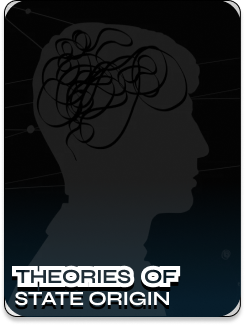

STATE
Political organization of society or the institutions of government. It represents a form of human association set apart from other social groups by its specific purpose. The word originates from the Latin "status," which means "order, arrangement, condition," and figuratively refers to "public order, community organization."
- 